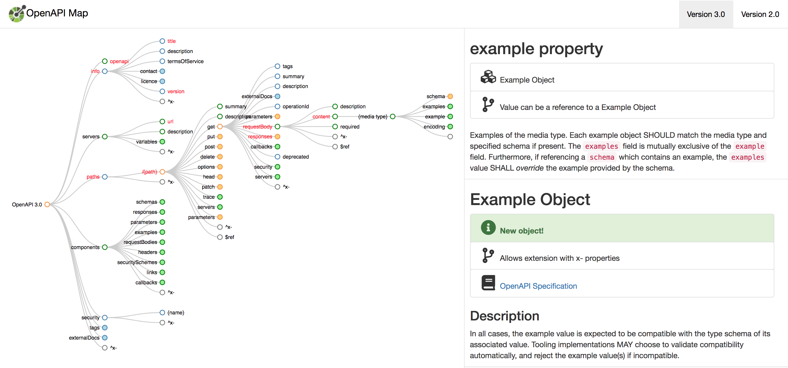

(2) Summary
APIs are the foundation of many digital transformation initiatives. However, APIs
come in many shapes and forms, and making the right design decisions is not an easy
task. This becomes even more important in large organizations, where the challenge
is to make good design decisions for individual APIs, while still making sure that
there is a shared design culture across the organization's API landscape. This presentation
takes a structured look at what matters for API design, and what good practices are
when it comes to creating and managing an organizational API design culture.
OpenAPI/Swagger Introduction
(22) OpenAPI Basics

- Swagger started as an easy way to generate code from an API description
- Server code is generated by generating stubs for all specified URI paths
- Client code generates SDKs for clients by wrapping API interactions
- Swagger was renamed to OpenAPI at the beginning of 2016
- Swagger still exists [https://smartbear.com/] offered by [https://swaggerhub.com/]
- [https://github.com/OAI/OpenAPI-Specification/blob/master/versions/3.0.0.md] is the first standalone OpenAPI version and was [https://www.openapis.org/blog/2017/07/26/the-oai-announces-the-openapi-specification-3-0-0]
- OpenAPI is focused on URI Style: Listing All Resources [URI Style: Listing All Resources (1)] APIs by modeling APIs as sets of URI paths
- Paths can be templated and have operations and optionally parameters
- JSON support is built into OpenAPI for request/response schemas
- XML support is present but rather weak in terms of XML sophistication
(23) JSON and YAML
- JSON is the de-facto standard for structured data on the Web
- JSON is human-readable but visibly comes from a code background
- [http://yaml.org/] evolved as a human-readable format for configuration data
- JSON data can be written in YAML for a more human-friendly syntax
- YAML has many additional features that JSON does not support
- OpenAPI is defined in JSON and allows JSON and YAML representations
(26) Minimal OpenAPI Example
- Identification of the Swagger/OpenAPI version
- Minimal metadata about the described API
- URIs that are made available by the API
- Operations that can be performed on these URIs
- Responses to expect from these operations
(27) Minimal OpenAPI Example (YAML)
openapi: 3.0.0
info:
title: Weather API
version: 1.0.0
servers:
- url: 'http://dret.net/weather'
paths:
/forecast:
get:
summary: Get the weather forecast.
responses:
'200':
description: Successful operation.
'400':
description: Invalid request.
'500':
description: Server error.
(28) Paths with Query Parameters
- URIs with Query Parameters:
/pets?limit=42
/pets:
get:
summary: List all pets
operationId: listPets
tags:
- pets
parameters:
- name: limit
in: query
description: How many items to return at one time (max 100)
required: false
schema:
type: integer
format: int32
(29) Paths with Path Parameters
- URIs with Path Parameters:
/pets/somepetname
/pets/{petId}:
get:
summary: Info for a specific pet
operationId: showPetById
tags:
- pets
parameters:
- name: petId
in: path
required: true
description: The id of the pet to retrieve
schema:
type: string
(30) OpenAPI/Swagger Editor

(31) OpenAPI: The Complete Picture

(32) OpenAPI Summary: Describing URI Style APIs
- OpenAPI describes APIs by listing all resource paths
- OpenAPI is often used to generate server/client code
- OpenAPI creates a static and tightly coupled API landscape
- Evolving OpenAPI APIs is not a core part of OpenAPI's mission


: 'The reason to make a real REST API is to get evolvability … a \"v1\" is a middle finger to your API customers, indicating RPC/HTTP (not REST)'")